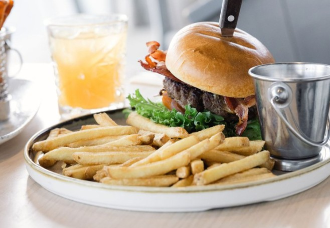

Spisesteder

- Buffet med blant annet kjøtt, fisk, suppe, salat og dessert
- Åpen for alle hver dag 19:00 til 22:00
- 450kr per person
Olden Fjordhotel
Lær mer

- Burger, pizza, fisk, biff
- Åpningstid kommer an på sesong
- Krever gondolbana for å komme seg opp
Hoven Restaurant
Lær mer

- Pizza, burger og fersk sjømat
- Åpningstidene varierer basert på sesong
- Sitteplasser både inne og ute
- Rett ved fjorden
Mølla Gjestehus
Lær mer
- Gatekjøkken med burger, fries, løvstek, pølse
- Også asiatiske retter, som wok og vårruller
- Åpent 11:00-19:00 hverdager
- 12:00-21:00 i helgene
Sundekiosken
Lær mer
- Afternoon tea med hjemmelagde kaker, scones og rundstykker
- 13:00 og 15:00 onsdag til søndag
- I autentiske, historiske omgivelser
Singerheimen
Lær mer
- Kafé med kuleis, softis, shakes, slush og bakverk
- Sitteplasser ute i sola
- Åpent 10:00 - 16:00
Stabukk
Lær mer
- Kafé med kaffi og kaker, samt løvstek, fisk og pizza
- Sitteplasser både inne og ute
- Åpent 10:00 - 20:00
Yris Kafé
Lær mer